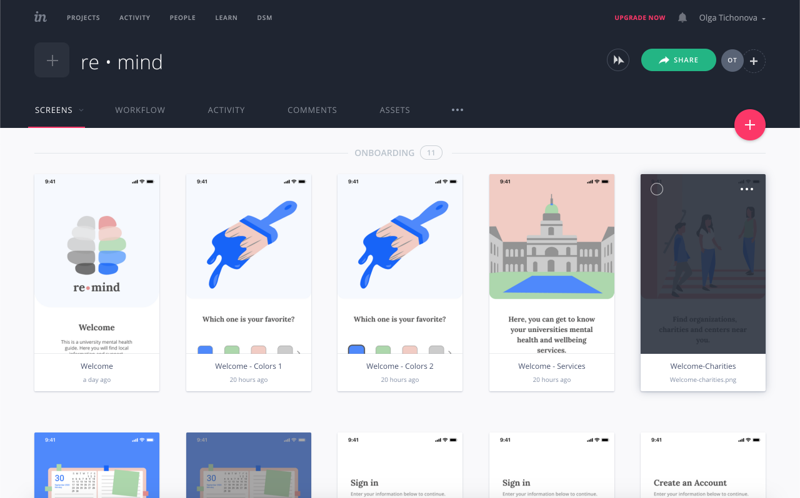

re • mind
There is a mental health crisis at universities. ½ of the students feel anxious and suicide amonghts them is increasing yearly. re • mind responds to the crisis by giving the students easy and reliable access to their university mental health services as well as local organizations, resources, and psychology centers. It helps fill the gap when there are not enough counselors on campus and empowers students to take control of their wellbeing.
Design Roles
- Research
- Information Architecture
- Visual Design
- User Testing
Challenges
- Understand university students needs.
- Understand frustrations with existing services.
- Help fill gap university counselling services.
- Design an intuitive and inviting interface.
- Give students easy access to local mental health support.
Solutions
Re • mind is a mobile app with local mental health resources, a map to indicate where all the services are located and an easily accessible step by step guide to the university services. Its design is balanced and welcoming with custom graphics, while the features and resources are a response to the user’s needs and frustrations. It gives students easy access and ways to navigate and get to know their local mental health services.
User Interviews
After researching the student mental health crisis I found it challenging to think of an app idea that helped empower students and was not a mood tracker or therapy app. Hence, I decided to conduct interviews before disseminating the user survey to dive deeper into the topic and find alternative approaches.
I conducted interviews with:
- A mindfulness teacher & professor specializing in consciousness research.
- A student with a chronic mental illness.
- A student who used university counselling services & private therapy.
- Student body president that ran a wellbeing campaign.
User Research
Women: 74%
Men: 36%
Average age: 25-34 years old.
The participants came from 15 countries and studied in 7 different countries.
- 63% struggled with mental health at university.
- 53% of the participants sought help.
- Only 40% of those participants used counselling services.
- 55% of participants rated their experience poor to satisfactory.
- 47% never to sometimes remember to take care of their mental wellbeing
Below activites that help participants improve their daily mental health. Most participants engaged in 2+ activities from the list.
The table includes the needs and frustrations of the participants that arose in the interviews and user survey.
| Needs |
- Affordable & appropriate help
- Helpful & personal counsellors
- Safe spaces
- Mental health charities
- Chronic mental illness support
- Peer support groups
- Positive mental health activities
- Access to public health care
- Diagnosis, treatment & medication
- List of local therapists
|
| Frustrations |
- Not getting enough attention/help
- No guidance after the counselling
- Impersonal counselors
- Clinical approach to counselling
- No support for chronic issues
- Lack of resources
- Long wait to get counselling
- Stigma around mental health
- Lack of safe spaces
- Slow mental health improvement
|
Competitive Analysis
A competitive analysis was completed with popular mental health apps.
- Headspace- a mediation app
- Daylio - a journaling and mood app
- Talkspace - a therapy app with licensed therapists

Since none of the apps were city-based I was inspired to create an app that was. I also wanted to add daily notifications to help remind the 47% of participants to engage in daily activities that enhance their mental wellbeing.
User Personas
After analyzing my findings I created 3 user personas.
- Went to university counselling and private therapy
- Attended local meditation group instead of counselling services
- Was turned away by the services because they had a chronic mental illness
The personas represented the user’s needs, frustrations, and demographic. They were vital to help make user-centric decisions.
Brian
Environmental enthusiast
22 yrs old | Student
Motivations
Brian is okay at taking care of his mental health. However, during exam time he struggles to keep to his normal routine and starts feeling anxious. He sought help from the counselling services, but felt like the process was too clinical. The counsellor didn’t seem very helpful, so he turned to private therapy.
Needs
- Exercise more
- Use Headspace more often
- Volunteer with troubled youth
Frustrations
- Impersonal cousellors
- Clinical approach to counselling
- Lack of mental health resources
Anissa
Mental health activist
24 yrs old | Student
Motivations
Anissa had anxiety and depression. She was nervous to reach out to the counselling services. Instead she stumbled upon a local mindfulness group and started attending their meetings. Practicing meditation and having a safe space to talk about her feelings helped her overcome her struggles.
Needs
- Organize files by date
- Collaborate with others easily
- Access files on all devices
Frustrations
- Paying for extra features
- Settings for many accounts
- No visual & text integration
Ellie
Mindfulness practitioner
22 yrs old | Student
Motivations
Ellie has been struggling with a mental health disorder since this year. She sought help from the university counselling services but was turned away because her issues were not part of their scope. She wasn’t accepted to join the the group sessions either. She turned to charities and other students in similar situations.
Needs
- Stay connected to family
- Get affordable therapy
- Raise mental health awareness
Frustrations
- No group therapy for chronic mental illnesses
- Lack of attention & help
User Stories
The user stories were based on the information gathered during the research phase. 35 tasks were identified and further divided by importance: high, medium, or low. I broke down the product’s features and defined the scope of work for future phases.
User Flows
The user flow sketches were made for all high priority tasks and a couple medium and low, which were reiterated to assure that the pathways were intuitive and successful between features.
| 17 User Flows that Include... |
- Learning about university counselling and mental health services
- Learning about local mental health support/services
- Find a private therapist on a map
- Create notifications
- Save notes
|
After the user flows, I created a sitemap which displayed all the prototypes screens.
Next, I devised the content strategy, where I wrote out all the headers, text, buttons, and images for the screen.
Wireframes
Here, I sketched the wireframes to test how the components looked on the screens and started to put together the MVP (minimal viable product).
Then I created digital wireframes in Figma using the iPad/iOS UI Kit, to ensure that the navigation, tab bars and other components were placed properly following the Human Interface Guidelines.
Brand Identity
For typography I matched numerous Google Fonts to find a balanced, young, and clean type for the header and text. I decided on a serif Lora for the brand typeface and a sans serif Open Sans for the complimentary typeface.
Next, I found inspiration online, drawing from other mental health apps, and decided on the color scheme. Knowing that I will be creating graphics for this app I decided on an array of hues that are welcoming, pleasant for the eye but at the same time exciting and vivid.
For the platform's name I created lists of imagery and emotions that represent the app’s purpose.

I decided on re • mind. It can be read as remind because it reminds you to take care of your mental wellbeing through its notifications. Or it can be read as re-mind; to regenerate the mind.
Preference Testing
To establish the logo I conducted 2 preference tests, one with the initial sketches and one with the digital logos.
Option B scored 50% of the votes, A, C, D scored 17% each and E scored 0%.

With the previous results of the preference tests in mind I created digital logos. The winner of this preference test was the logo in the far right with 80% of the votes.
The winning logo has half of the brain that is gray and the second side is flourishing and colorful. The imagery represents the improvement of someone’s mental health.
The style guide included logo variations, colors, typography, buttons, the grid system, icons and input details.
High Fidelity Mockups
To create the high fidelity mock-ups I created the graphics and icons for the wireframes. It was challenging to create all the graphics and combine them with the different visual components on the screens in a balanced and effective way. The screens improved through usability testing.
Below is the evolution of some screens, such as the components of an introduction screen.
Changing the location information on the map from a pop-up to a card.
Changing the location key from a card to a drop-down menu.
Prototyping & Usability Testing
For this section, I used InVision to connect the screens together and establish logical pathways between them.

I ran 3 usability tests, one online and two offline using an adapted version of Steve Krug’s script. I asked the participants to complete all tasks established in the user flows. Generally, they had a clear understanding of the app's purpose and helped reiterate the sections found below.
A ‘save’ button was added to the notes and notification screens.
Tab bar icons were added to show the users where to find the information mentioned in the introductory screens.
Lastly a navigation bar was added to the university counselling process, which made navigation back to the parent screen easier and enhanced the user experience.
Lessons learned...
- Value of user interviews and how they helped me understand the topic in more depth and get exposure to a variety of new approaches towards mental health.
- Utilize iOS UI Kits for wireframes and high fidelity mockups.
- Use Human Interface Guidelines to learn about implementing iOS mobile app practices.
- How to create UI for notifications, notes, and maps.
- Connect mobile screens in an intuitive way.
With more time...
- Create a modular version of this app that can be used for different universities.
- Make the app’s design more customizable.
- Run more usability tests once new features are added.
- Do more research and add more local information.